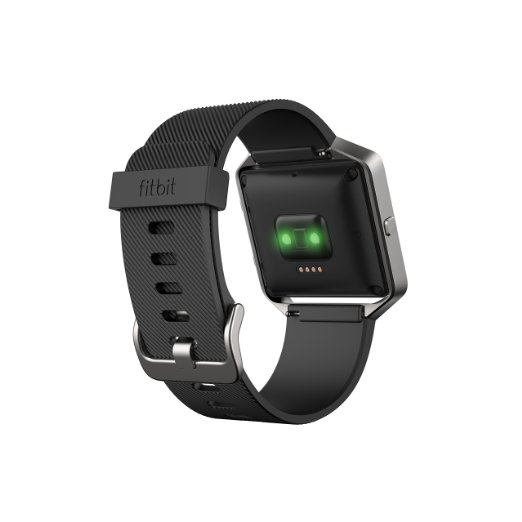
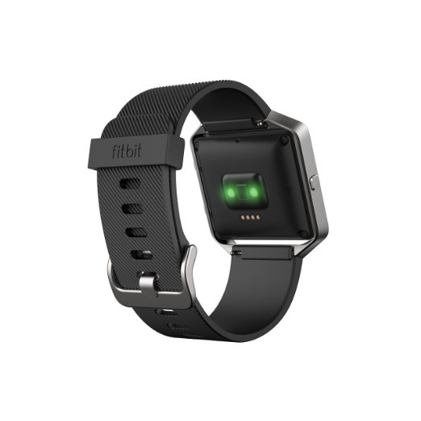

Fitbit Blaze Smart Fitness Watch, Black, Silver, Large

 

Product Information
- See simplified heart rate zones for quickly checking exercise intensity during workouts with PurePulse(TM) continuous, wrist-based heart rate monitoring (no uncomfortable chest strap required)
- Use multi-sport tracking to track runs, cardio, cross-training, biking and more. Effortlessly and automatically record other workouts to your dashboard with SmartTrack
- Enable connected GPS to map your routes and see run stats like pace and duration on display (when your phone is nearby)
- Track steps, distance, calories burned, floors climbed and active minutes. Stay connected with call, text & calendar alerts and notifications from your favorite apps like Gmail, Facebook and more (when phone is nearby).
- Start a FitStar workout on your wrist and get step-by-step instructions and graphics to ensure you complete each move correctly